Desktop release candidate acceptance / 2026-07-18
LocalMiniDrama 产品体验与发布验收
以实际桌面工作流为准，覆盖项目入口、AI 服务、素材、剧集就绪度、制作台、画布和自由创作。移动端、代码签名和外部真实 Provider 深度接入按已确认范围后置。
验收摘要
验收视口：1440×900、1366×768
范围判断
桌面 Web、Docker、Electron、工作流、备份恢复、发布链路、安全边界、测试与验收报告的实现已完成；最终干净提交证据仍按下方门禁收口。
移动端重排、Authenticode 签名、外部真实 Provider 深度联调。未配置的视频与语音服务会在产品中明确阻断正式制作，并提供返回上下文完整的配置入口。
1.3.3 当前工作树的源码、Docker、四份 SBOM 与三份 Dockerfile 已完成开发期验证。提交后还必须将生产 E2E、Setup / Portable / Unpacked、Gitleaks、Trivy、Defender、Electron Fuse 和离线校验绑定同一提交，并等待 GitHub CI 独立复验。
产品与项目联合验收
发现问题先回开发修复，再重新进入测试与审计
产品经理：体验验收待最终 E2E
- 项目首页、就绪度、制作台、画布、素材中心和 AI 配置均有明确的主任务与下一步。
- 缺少视频或 TTS 能力时，正式命令失败关闭，同时保留可带上下文返回的配置入口。
- 跨项目图片可以从素材中心挂载为分镜自由参考图或视频主参考图。
- 素材选择器已阻止旧请求覆盖新请求，加载、错误、空态和确认操作保持一致。
- 项目包导入失败改为持久页内反馈，提供安全文件名、可操作原因、重新选择和关闭入口。
- 素材选择器空态可直接清除筛选或前往素材中心上传，并通过受限返回地址回到原制作台。
- 1366×768 素材选择器已重拍并验证焦点返回；长名称键盘提示、重试恢复和中文路径视频的解码/时间轴证据已补齐，完整发布仍须随最终容器复验。
项目经理：当前发布 NO-GO
- 1.3.3 桌面范围、后置边界、发布失败条件和回滚责任已写入文档与自动化门禁。
- 源码、生产 E2E、Windows 三类制品、SBOM、秘密扫描和 CI 必须绑定同一提交。
- 当前 E2E 证据为失败且工作树非干净，Docker 报告仍需重建；在最终提交复验前不批准发布。
- 任何同 SHA 门禁失败都回到开发阶段，不允许用人工说明替代通过记录。
流程证据
截图均来自本轮实际运行页面；步骤“健康”仅表示该页面场景通过，不等同于发布 GO
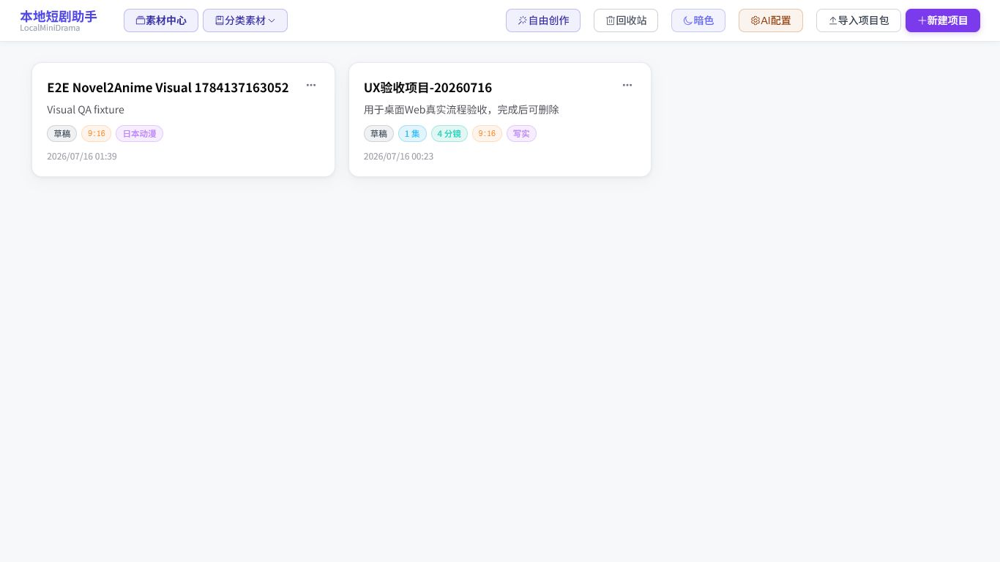
项目首页
健康素材中心、分类素材、自由创作、回收站、AI 配置、导入和新建项目都在首屏；项目卡片使用键盘可达链接，操作菜单与进入项目分离。
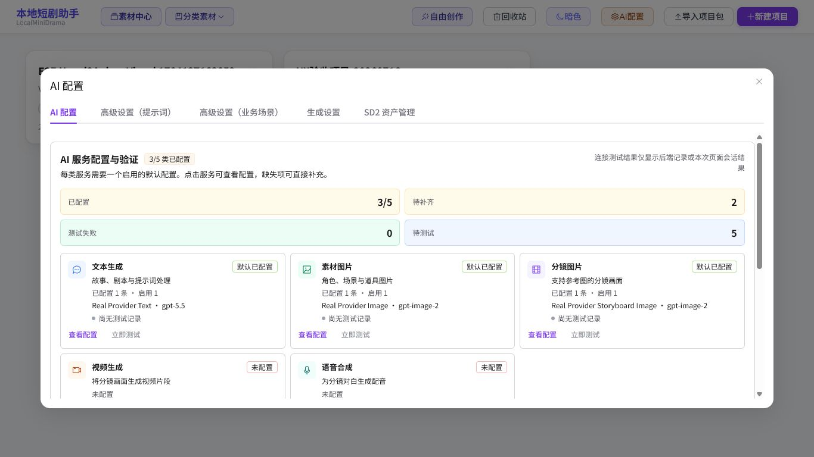
AI 服务配置与模型
健康五类服务状态、默认模型、连接测试和缺口集中展示；支持多厂商预设与 OpenAI 兼容协议。当前视频和语音未配置属于已确认的外部接入后置范围。

自由创作
健康图片与视频模式分离，生成前显示服务和模型；不可用能力会禁用命令，并可带模式上下文返回 AI 配置。

项目就绪度
健康在 1366×768 下仍能看到下一步、就绪进度和分类状态；缺失的视频模型被明确定位，没有让用户进入无法完成的正式制作。
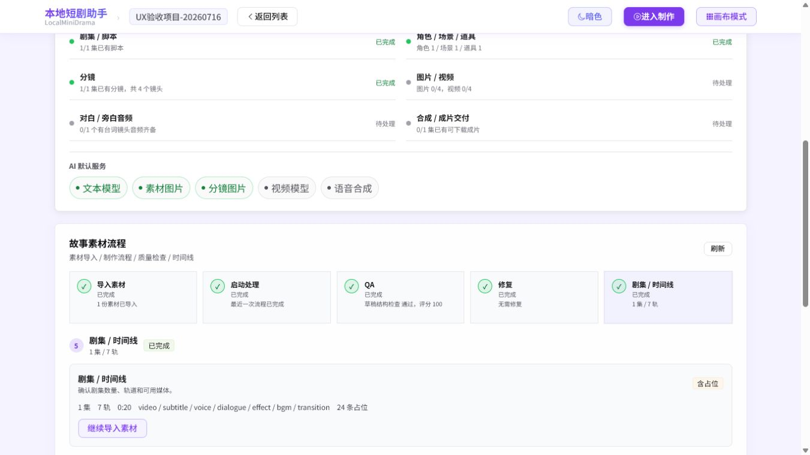
素材、QA 与时间线
健康导入、处理、QA、修复和剧集时间线形成连续状态链；本轮修复了吸顶栏半透明导致滚动内容透出的视觉重叠。

制作工作台
健康七步生产导航固定在左侧，当前任务与资源数量可扫描；剧本、资产、分镜和合成命令保持在同一项目上下文。

画布模式
健康节点在最低可读缩放下保持清晰；批量命令按服务能力禁用，列表模式、小地图、对齐和聚焦操作可用于大型剧集。
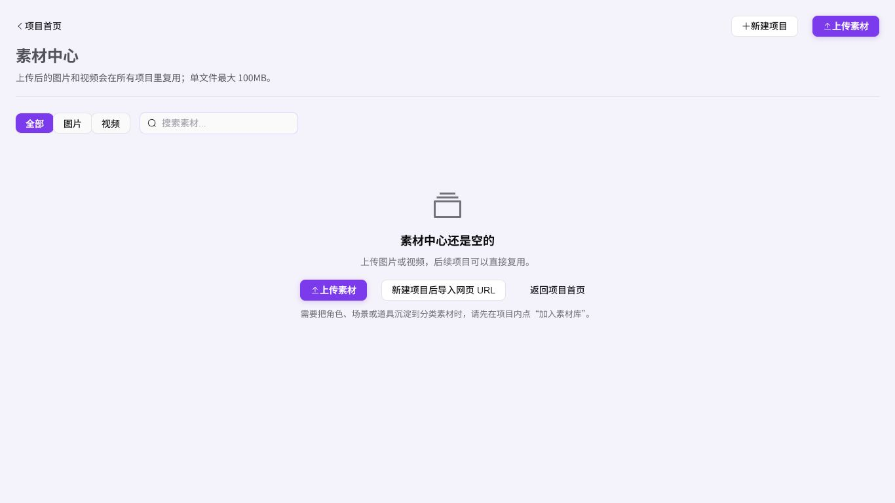
素材中心与网络来源
健康空状态提供本地上传和“新建项目后导入网页 URL”两条路径；图片与视频可跨项目复用，角色、场景和道具继续通过分类素材库管理。

分镜媒体与合成前置
健康草稿占位不会伪装成完成媒体；图片、视频、尾帧衔接和批量命令保持在同一分镜上下文，合成前明确显示完成覆盖率。
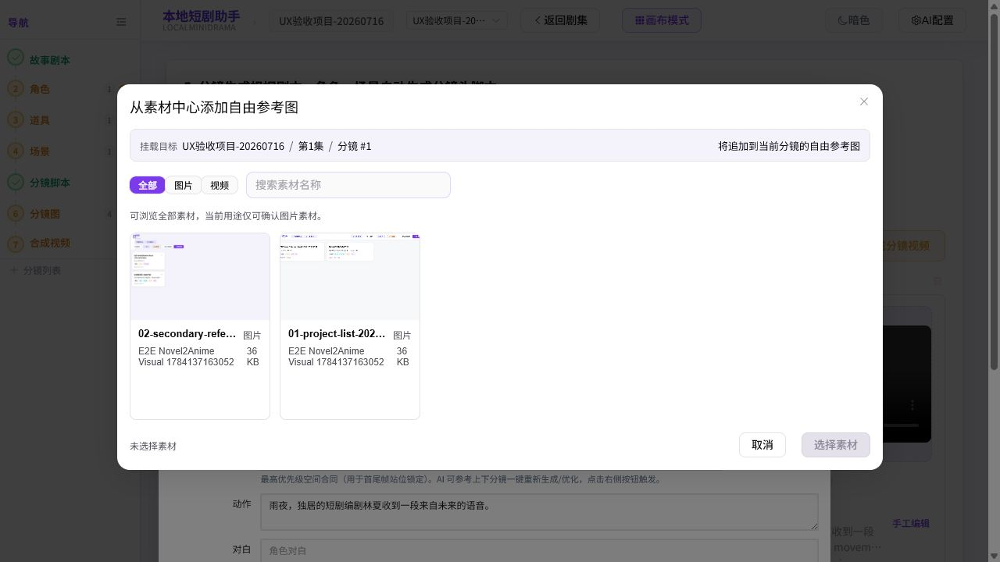
跨项目参考图复用
健康选择器展示挂载目标、来源项目、类型兼容性和确认状态；长文件名可悬停查看全文，嵌套弹窗支持 Esc 逐级关闭并将焦点还给触发按钮。
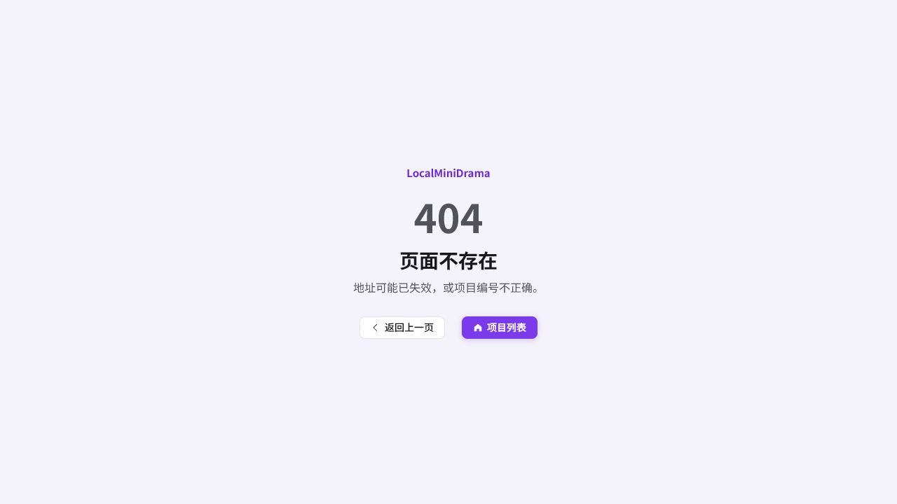
导航失败恢复
健康未知路由不再留下空白或损坏工作台，用户可以返回上一页或直接回到项目列表。
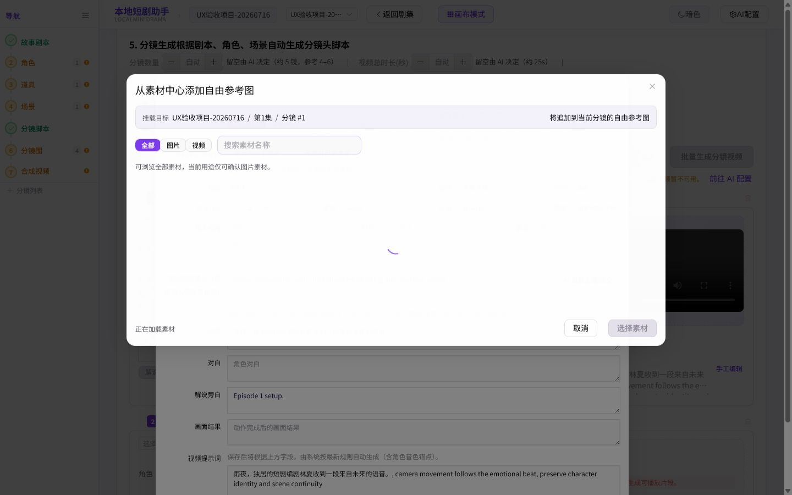
素材加载反馈
健康加载期间明确显示进度、设置忙碌状态并禁用确认，旧请求不会覆盖当前查询。
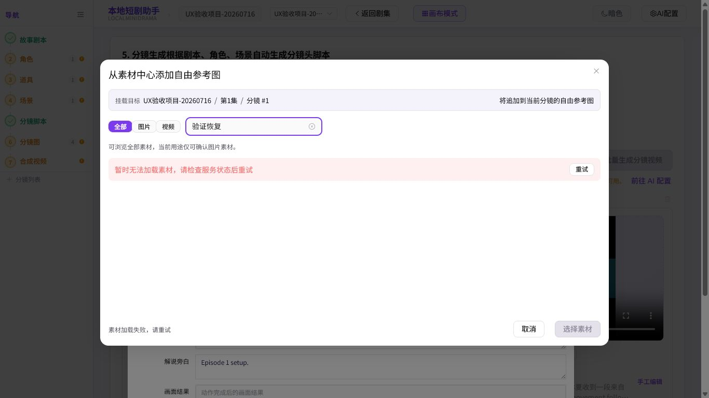
素材失败恢复
健康网络故障只显示安全、可执行的页内中文提示，不泄漏底层错误或重复 Toast；服务恢复后可原位重试。
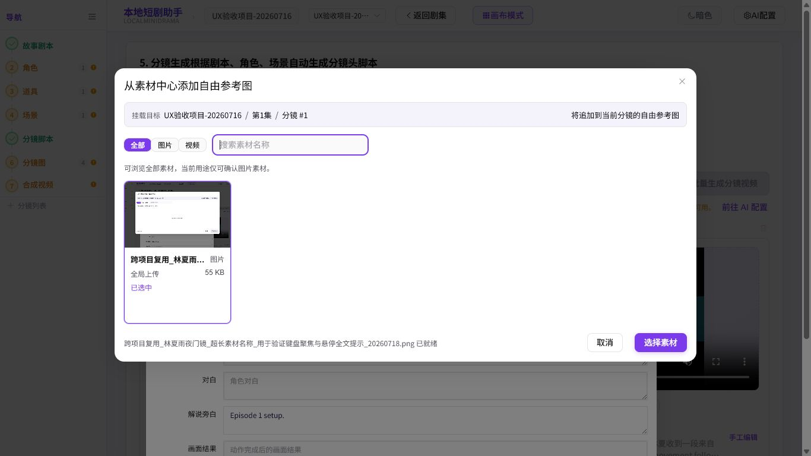
紧凑桌面视口
健康1366×768 下弹窗、筛选、空态和底部动作完整位于视口内，页面无横向溢出；中文项目视频范围请求无 4xx/5xx。
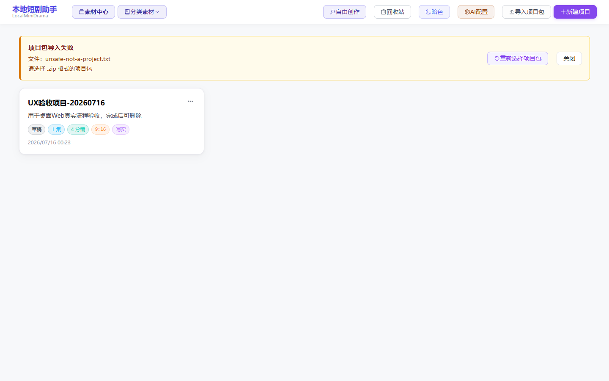
项目导入失败恢复
健康无效项目包保留安全文件名与明确原因，用户可以重新选择或关闭提示；测试文件只存在于内存，未接触用户文件。
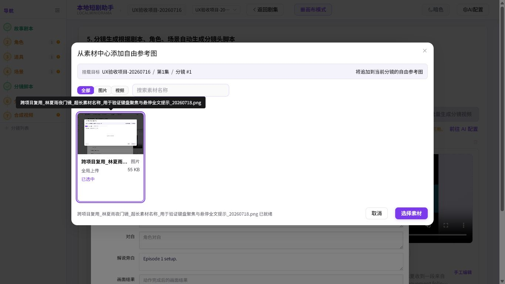
长名称键盘提示
健康键盘聚焦素材项时显示完整文件名提示，提示框限制在视口内；焦点环与操作目标清晰分离，没有用截断文本代替可访问名称。
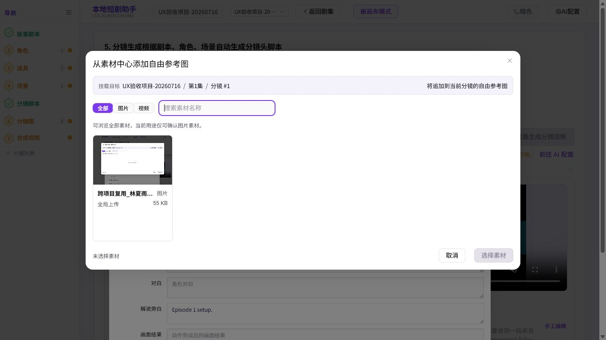
重试恢复成功
健康服务恢复后原位重试重新显示素材，搜索框已清空，错误计数与重复 Toast 均为零，确认动作按选择状态保持禁用。
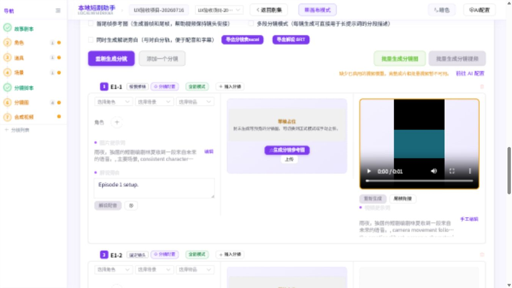
中文路径视频媒体
待最终 E2E当前截图证明中文项目路径 MP4 的 206 / video/mp4、readyState=4 与可解码状态；最终干净 SHA 的生产 E2E 将使用中文项目名，并要求成片与分镜视频实际播放到 ended 后才放行。
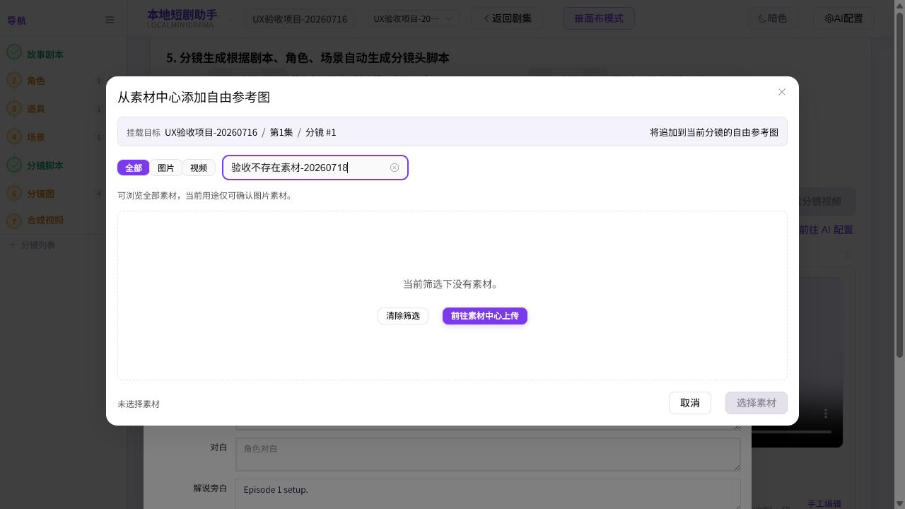
素材筛选空态
健康输入不会命中的素材名称后，页面明确显示当前筛选下没有素材，同时提供清除筛选和前往素材中心上传两个可执行动作；截图来自本轮浏览器验收。
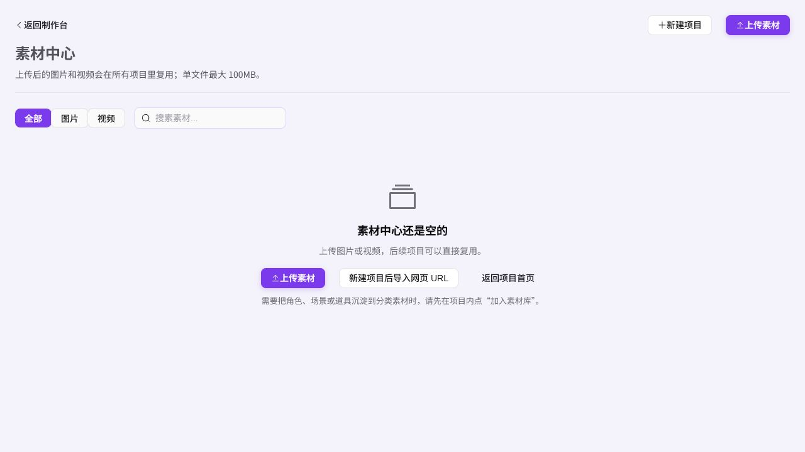
素材中心承接
健康空素材中心同时提供上传素材、新建项目后导入网页 URL 和返回项目首页；从制作台进入时保留安全 returnTo 参数，职责边界对用户可见。

安全返回制作台
健康点击返回制作台后恢复原项目、原集数和分镜页面，没有落到首页或丢失上下文；弹窗与长文本在当前桌面视口内无重叠。
质量与运行证据
| 门禁 | 结果 | 证据 |
|---|---|---|
| 后端 | 通过 | 391/391 测试、JavaScript 文件检查、流程审计、ZIP/凭据/备份边界；中文项目静态媒体的 MIME、Range、206 响应与浏览器解码/时间轴推进已回归。 |
| 前端 | 通过 | 234/234 测试、真实 Vue 请求竞态与错误提示策略回归、组件契约、桌面无障碍、关键流程、生产构建和包体预算。 |
| 桌面 | 通过 | 59/59 测试、Electron 生命周期、原生 ABI、URL 安全、媒体工具信任；正式 Setup、Portable、Unpacked 启动 smoke 待 Release 工作流复验。 |
| Docker | 开发容器通过，待最终 SHA | Node 20 镜像边界、后端 391/391、前端 234/234、只读根文件系统和运行时配置净化均已复验；提交后必须再次构建并绑定最终 SHA 与镜像 ID。 |
| 生产 E2E | 待最终 SHA 复验 | 现有执行完成了媒体闭环，但证据因工作树非干净而标记失败；不得将旧调用次数作为当前候选提交的 PASS。 |
| 备份与回滚 | 待最终 SHA 复验 | 备份恢复专项测试为 38 项；verify:rollback 将在干净 1.3.3 提交上执行脱敏备份、隔离恢复和中断清理。正式检查点会捕获实际配置 bind mount 与镜像 revision，归档 Compose / 配置 / images.tar / 哈希；恢复前加载并核对旧镜像，失败会自动还原升级后数据与服务。 |
| 依赖安全 | 通过 | 后端、前端和桌面使用 npm 官方审计端点，生产依赖均为 0 vulnerabilities。 |
| 发布制品 | 待正式发布 | 正式 Setup、Portable、Unpacked ZIP、四份 CycloneDX SBOM、媒体工具元数据与发布清单将在 v1.3.3 Release 工作流生成后执行 SHA-256 离线复核。 |
| 制品安全 | 本地通过，远端待验 | 固定 Trivy 0.64.1 对四份 1.3.3 SBOM 和三份 Dockerfile 的本地扫描为 0 High/Critical；正式附件仍须通过 Gitleaks、Trivy、Defender 与 9 项 Electron Fuse 门禁。 |
本轮关键收口
用户体验
- 移除“微信我”，减少无关入口。
- 扩展 AI 厂商、协议和模型配置。
- 自由创作与项目工作流按服务就绪度阻断。
- 画布最低可读缩放、聚焦、返回上下文和列表模式收口。
- 核心界面统一为中文生产术语。
安全与发布
- Provider URL、endpoint、settings 和导出凭据脱敏。
- ZIP 条目数在完整 materialize 前限制，覆盖 ZIP64。
- AI 默认配置由唯一索引和写事务保证。
- Release 构建禁止自动发布，制品复验后才创建草稿。
- FFmpeg 使用固定可信摘要，备份默认排除 Provider 凭据。
- Trivy 读取四份 SBOM 并扫描三份真实 Dockerfile；后端绑定目录启动降权例外有明确范围并于 2027-07-17 到期复审。
无障碍与证据边界
已验证
- 项目卡片键盘入口、弹窗焦点和画布面板聚焦。
- 模式控件、状态提示、错误提示和关键按钮的可访问名称。
- 双桌面视口无横向溢出，媒体可加载、解码并推进时间轴；完整播放仍以最终容器复验为准。
证据限制
- 截图不能单独证明完整屏幕阅读器兼容；结论结合自动化语义契约。
- 真实云 Provider 的计费、限流和长耗时行为按范围后置。
- 恢复后不会携带密钥，管理员必须重新录入并执行连接测试。
- GitHub CI 是推送后的远端独立复验；机器发布结论以制品目录中的安全证据、清单和 SHA256SUMS 为准。